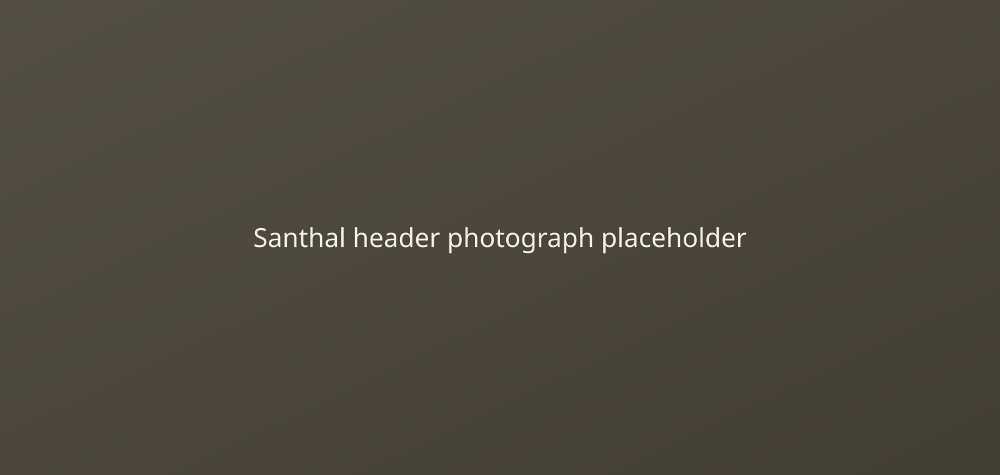

Village governance
The Munda are known for traditional village councils that manage land, ritual life and community affairs. Archival material to be added.
The Munda community is known for strong village governance, agricultural life and a long cultural tradition in eastern India.

The Munda are an Indigenous community primarily found in Jharkhand, Odisha, West Bengal, Bihar and Chhattisgarh. Their identity is linked to village council traditions, seasonal agriculture and oral storytelling.

The Munda community has a long history of local self-governance and customary law through village assemblies. Archival material to be added for their historical experience and interactions under colonial administration.
The Munda are known for traditional village councils that manage land, ritual life and community affairs. Archival material to be added.
Colonial land revenue systems and outside intervention altered Munda livelihoods and authority structures. Archival material to be added.
Munda traditions remain an important part of the cultural landscape in eastern India, with community memory preserved through song and ceremony. Archival material to be added.
Munda festivals are tied to harvest and forest seasons, often marked by communal ritual and offerings. Archival material to be added.
Folk song and dance accompany ceremonies, agricultural work and storytelling. Archival material to be added.
Crafts and textiles reflect local design, clan identity and everyday tools. Archival material to be added.
Mundari is the principal language of the Munda people and belongs to the Austroasiatic family. It is recorded in Latin script and also represented in writing systems used by speakers in different states.
Archival material to be added for language use, oral tradition and written literature.
Writing system: Mundari appears in Latin script and in local scripts used regionally for education and literature.
Archival material to be added for a record related to Munda land and community practice.
Date: TBD
Source: Archival collection to be added
View documentArchival material to be added for a community letter or report.
Date: TBD
Source: Archival collection to be added
View documentArchival material to be added for research notes or community records.
Date: TBD
Source: Archival collection to be added
View documentArchival material to be added for an article on Munda social life.
Read articleArchival material to be added for a news item or recent research note.
Read articleArchival material to be added for a future research note or contextual overview.
Read article